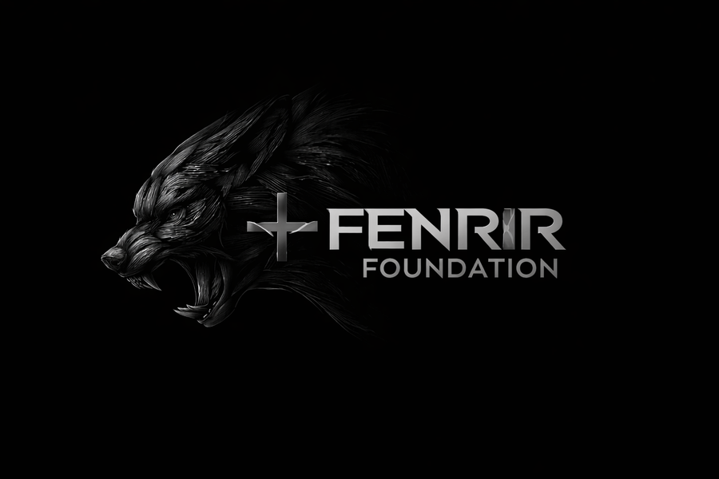

01
Purpose
Fenrir Foundation was established to oversee and coordinate diversified strategic activity through a disciplined management framework focused on continuity, control, and long-range value creation.
Fenrir Foundation is a private management company overseeing diversified strategic operations across multiple sectors. The firm exists to apply disciplined frameworks, controlled decision-making, and durable long-term thinking across evolving environments.

A restrained institutional identity built around discipline, durability, and informed control.
The website is designed as an informational profile. It does not advertise public participation, solicit investors, or promote any single asset class. Its purpose is to communicate the identity, scope, and operating posture of the company.
Fenrir Foundation was established to oversee and coordinate diversified strategic activity through a disciplined management framework focused on continuity, control, and long-range value creation.
The firm operates with restraint. Decisions are structured, exposure is considered deliberately, and operational movement is guided by process rather than reaction.
The brand language is intentionally dark, minimal, and controlled, reflecting a private company built around measured execution rather than public-facing promotion.
The company maintains a broad operating mandate. Rather than centering on one market segment, the firm may oversee strategic activity across multiple categories where disciplined management and long-term structure are appropriate.
The objective is not breadth for its own sake, but informed oversight across areas where structure, patience, and control matter.
This framework allows the company to remain adaptable while preserving a consistent internal standard for how opportunities are evaluated and managed.
The firm’s posture is defined less by visibility and more by internal standards. Every operating principle is intended to reinforce durability, discipline, and decision quality.
Growth is not pursued at the expense of structure. Sustainable progress begins with coherent internal systems, operational clarity, and control over pace.
The firm prioritizes understanding downside, friction, and operational exposure before taking action. Preservation of optionality remains central.
Decisions are made within defined frameworks rather than short-term pressure. Time horizon, quality, and repeatability outweigh impulsive movement.
This website is intended solely to provide general informational material regarding the company and its operating profile.
Nothing on this website constitutes an offer to sell, a solicitation of an offer to buy, investment advice, legal advice, or a recommendation regarding any security, fund, real estate interest, or other financial or commercial arrangement.
Fenrir Foundation does not use this website to publicly advertise participation opportunities. References to areas of operation are illustrative of the company’s general scope and internal orientation only.